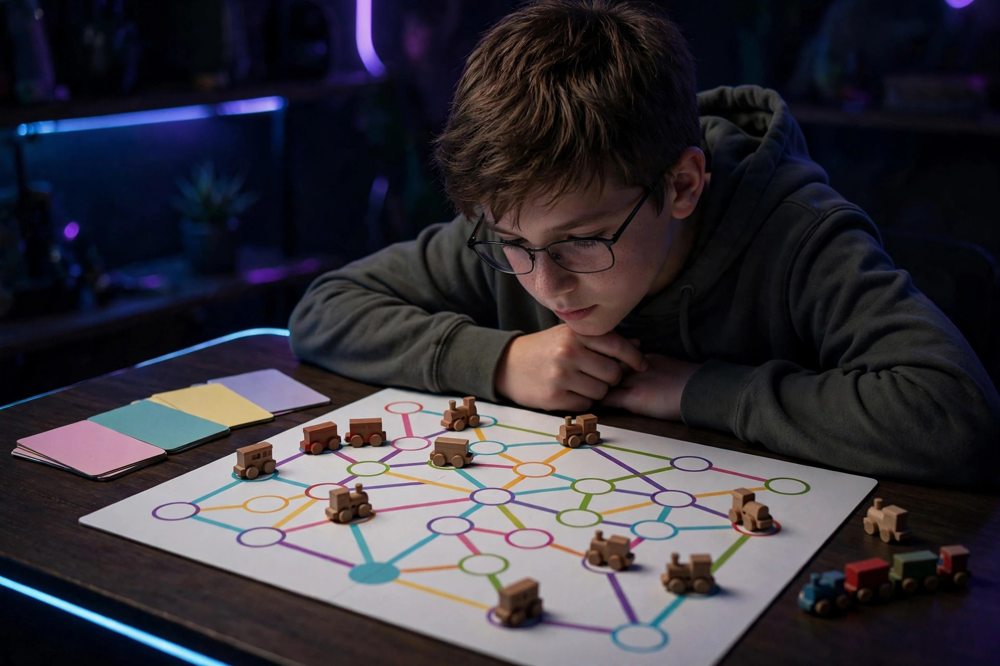

Strategy-lite board games for tweens

Between the luck games of childhood and the rulebook marathons of adult hobby gaming sits a narrow, valuable band: strategy-lite. These are games where a ten-year-old makes real decisions — decisions that visibly change the outcome — but learns the rules in one sitting and finishes before the evening does. The trick is order. Hand a tween a trading game before they have ever managed a hand of cards toward a goal, and the negotiation feels like chaos; hand them the same game third, and it feels like power. This guide arranges five verified strategy-lite games as a ladder, one new mechanic per step: routes, then tiles, then drafting, then an engine, then trading. Every specification was checked against publisher or retailer listings on October 16, 2026.
The ladder at a glance
| Step | Game | Players | Ages | Time | New mechanic | Conflict level |
|---|---|---|---|---|---|---|
| 1 | Ticket to Ride | 2–5 | 8+ | 30–60 min | Set collection toward secret routes | Low — rivals can take your route, nothing more |
| 2 | Carcassonne | 2–5 | 7+ | About 35 min | Tile placement and worker placement | Medium — shared features can be joined and split |
| 3 | Azul | 2–4 | 8+ | 30–45 min | Open drafting with penalties | Medium-high — taking tiles can strand an opponent |
| 4 | Splendor | 2–4 | 10+ | 30 min | Engine building | Low — a race run mostly in parallel |
| 5 | Catan | 3–4 | 10+ | About 60 min | Trading and negotiation | High — direct trades, blocking, and the robber |
One dated Canadian price check from October 16, 2026: Azul was listed at CA$43.97 at Amazon.ca. Prices move; that figure is a snapshot of the check date, included so the ladder carries at least one real, dated anchor instead of the "around forty dollars" fog most lists offer.
Step 1: Ticket to Ride — routes and sets
Ticket to Ride (Days of Wonder) is the correct first strategy game for most tweens: 2 to 5 players, ages 8 and up, 30 to 60 minutes, and a turn that offers exactly three choices — draw train cards, claim a route, or draw more destination tickets. Players collect sets of colored train cards and spend them to claim railway routes between cities on a map of North America; longer routes score more, destination tickets pay a bonus for connecting two distant cities, and the longest continuous railway earns an end-game reward. The box is generous — a board map, 240 colored train cars, 110 train car cards, and 30 destination tickets — but the thinking is compact: save for the big route, or grab the small one before someone else does?
PC Gamer's family board games review reaches the same verdict, calling Ticket to Ride "a great gateway to newer strategy games" and noting the built-in tension that a round spent drawing cards is a round a rival can spend claiming the route you need. That review lists setup at about five minutes — a teach time parents can verify on the first night. For double-digit players who master the base map quickly, the review suggests Ticket to Ride: Europe as a step that is just slightly more complicated.
Step 2: Carcassonne — one tile, one choice
Carcassonne (Z-Man Games) adds spatial thinking. It plays 2 to 5 players, ages 7 and up, in about 35 minutes. Each turn is a single drawn tile — showing pieces of cities, roads, monasteries, and fields — placed to extend a growing medieval landscape, plus one decision: whether to claim the feature just built by placing a follower on it. Followers take roles from the tile they occupy — knights in cities, thieves on roads, monks in monasteries, farmers in fields — and each role scores differently when its feature completes. The strategy hides in the supply: followers are limited, and a placed follower does not return until its feature finishes, so committing one is a real investment. The current edition's contents run to 72 land tiles, 40 meeples, 12 river tiles, and 5 abbots, and the game carries a notable pedigree as the 2001 Spiel des Jahres winner. For tweens, the lesson is patience — the best tile is not always the one that scores today.
Step 3: Azul — drafting with a sting
Azul (Plan B Games, designed by Michael Kiesling) introduces open drafting: everything is visible, and every take denies someone else. It plays 2 to 4 players, ages 8 and up, in 30 to 45 minutes. Players draft colored tiles from a central supply and arrange them on a personal board, building patterns and completing rows and sets for points — with a penalty for tiles taken beyond what the board can hold. That penalty is the step up: for the first time on this ladder, greed has a price printed on the player's own board, and watching an opponent's board becomes as important as watching your own. Azul is also the ladder's quietest game — no cards to read, no map to parse — which makes it the best step for a tween who thinks visually. It was listed at CA$43.97 at Amazon.ca on October 16, 2026.
Step 4: Splendor — the quiet engine
Splendor (Space Cowboys) teaches the most adult idea on the ladder, engine building, inside the shortest rule set: 2 to 4 players, ages 10 and up, about 30 minutes, and a game its listings say can be explained in about five minutes. Players lead Renaissance merchant guilds. Each turn is exactly one action — take gem tokens, reserve a card, or buy one. Bought development cards become permanent discounts, so each purchase makes the next purchase cheaper, and accumulating the right bonuses attracts noble patrons worth points. The first player to 15 prestige points triggers the end of the game. The box holds 90 development cards in three levels, 40 gem tokens, and 10 noble tiles. Because interaction is indirect — a race run mostly in parallel — Splendor suits a tween who loves optimizing but bruises when directly attacked; the drama is watching a slow engine suddenly outrun everyone.
Step 5 (stretch): Catan — trading enters the room
Catan is the ladder's graduation step, not its starting point: 3 to 4 players, ages 10 and up, about 60 minutes on the Asmodee store's listing. Players settle a modular island of hexagonal terrain, collect brick, wood, wheat, ore, and sheep from the land around their settlements, and build roads, settlements, and cities in a race to 10 victory points. The new mechanic is each other. Resources rarely arrive in the mix a player needs, so the game runs on trading — offers, counter-offers, refusals — and rivals can block a road or send the robber to stall a leader. That social layer is exactly what a confident tween is ready for and a shy nine-year-old is not, which is why Catan sits at step five despite its fame. The modular board means no two games set up the same way, so the game survives the whole ladder's worth of practice.
Choosing by conflict tolerance
- Loses badly, quits fast: start at Ticket to Ride, then Splendor. Both are races with indirect interference; nobody can smash a plan the tween built.
- Loves puzzles, thinks in pictures: Carcassonne and Azul early. Both reward spatial planning, and Azul's penalty row teaches restraint without a word of lecturing.
- Argues like a lawyer: accelerate to Catan. Negotiation is the game there, and a tween who enjoys the haggle will carry the table.
- Only 30 minutes, ever: Splendor and Azul both finish in about half an hour; Ticket to Ride can stretch toward its 60-minute top end with five players.
FAQ
What is a good first strategy game for a 10-year-old? Ticket to Ride: three possible actions per turn, secret goals that keep a losing player hopeful, and a 30-to-60-minute finish. Move up the ladder one mechanic at a time.
Is Catan too hard for tweens? The box says ages 10 and up and the rules are learnable; the real gate is social. Trading and the robber reward kids who can bargain and absorb a setback.
Which of these work with two players? Ticket to Ride, Carcassonne, Azul, and Splendor all list 2 players as their minimum. Catan needs 3 to 4, because trading needs a market.